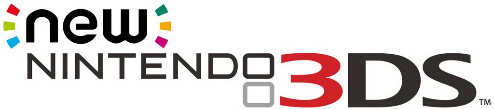
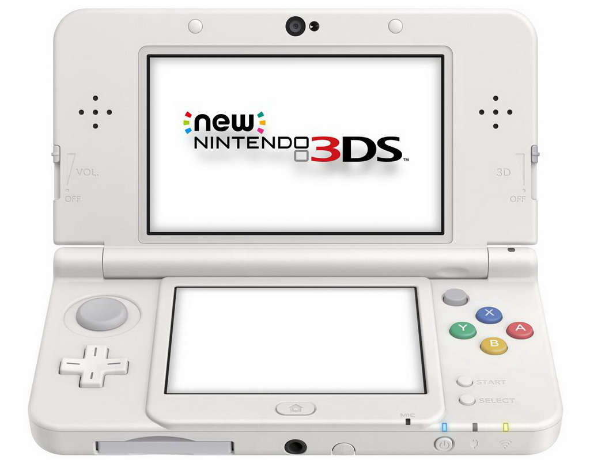
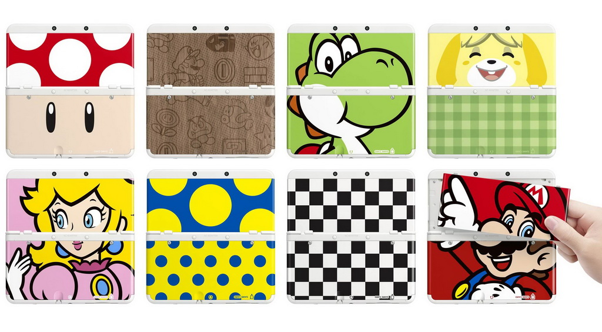

Поскольку продажи Nintendo 3DS не были столь высокими, как предполагала Nintendo, и в свою очередь это повлекло некоторые убытки, то было решено снизить цены на Nintendo 3DS. С 12 августа 2011 года цены на консоли снизились более чем на 40 % во всех регионах: в Америке — до $169,99, в Японии — до ¥15000, в Европе — до €169,99, в Англии — до £115, в Австралии — до AU$249,96. Для тех игроков, которые приобрели Nintendo 3DS и зарегистрировались в NintendoClub до 12 августа 2011 года Nintendo предложила программу Ambassador, по которой игроки могут скачать бесплатно 10 игр для Nintendo Entertainment System и 10 игр для Nintendo Gameboy.

Nintendo 3DS поступила в продажу с версией прошивки 1.0.0-0, которая включала в себя минимальный набор программного обеспечения и 2 встроенные игры. Спустя несколько дней Nintendo выпустила прошивку 1.1.0-1, вместе с которой установился небольшой демонстрационный 3D-видеоролик, зависевший от региона использования консоли. В прошивке 2.0.0-2 (6 июня 2011 года) был добавлен интернет-браузер, возможность передачи DSiWare-приложений c Nintendo DSi/Nintendo DSi XL на Nintendo 3DS и онлайн-магазин Nintendo eShop. В прошивке 3.0.0-5 (7 декабря 2011 года) появилась возможность съёмки 3D-видео длительностью до 10 минут, а также обновление Nintendo eShop, благодаря которому пользователи могут скачивать демо-версии игр. Во всех прошивках повышалась стабильность работы системы и усиливалась защита от пиратства.
Согласно информации от разработчика игр THQ, в Nintendo 3DS используется очень сложная защита от запуска нелицензионных копий игр, с помощью которой Nintendo собирается бороться с пиратством, значительно выросшим благодаря возможности использования дешёвой флеш-памяти в наладонных консолях и росту популярности файлообменных сетей.

Сменные обложки для Nintendo New 3DS
В Европе система изначально была представлена в 3 цветовых схемах: голубой (Aqua Blue), чёрный (Cosmo Black) и красный (Flame Red). Все варианты имеют полированную поверхность. Кроме того вышли специальные издания: белая консоль (Ice White) с игрой Super Mario 3D Land, розовая (Coral Pink) с Nintendogs + Cats., чёрная с The Legend Of Zelda: Ocarina Of Time 3D и синяя с Fire Emblem: Awakening. Во всех цветовых схемах вокруг основного экрана добавлена чёрная окантовка для усиления 3D эффекта.
Разновидности серии Nintendo 3DS
Nintendo 3DS XL (LL)
21 июня 2012 года Nintendo объявила о выходе обновлённой версии Nintendo 3DS XL (в Японии Nintendo 3DS LL). Поступление в продажу состоялось 28 июля в Европе и Японии и 19 августа в Северной Америке. Аналогично консоли Nintendo DSi XL, в новой версии увеличен размер экрана (на 90 %, до 4.88 дюйма — верхний и до 4.18 дюйма — нижний).. Габариты устройства равняются 156 x 93×22 мм. Nintendo 3DS XL стоит $199,99 (€195 в Европе) и доступна в пяти цветах (белый, красный\чёрный, серебристый\чёрный, голубой\чёрный, розовый\белый), также, эксклюзивно в «Поке-Центрах» Японии с 17 августа можно было оформить предзаказ на «Pikachu Yellow Edition». В комплекте идёт SD карта 4GB.
Nintendo 2DS и New 2DS XL (LL)
28 августа 2013 Nintendo представила Nintendo 2DS — вариант 3DS без стереоизображений в форме моноблока (новая консоль не складывается). У неё осталось 3 камеры. Цена в Америке — 130$.
В середине 2017 г появился вариант New Nintendo 2DS XL, с увеличенным на 82 % экраном по цене почти в 150 долларов США. Консоль так же не способна воспроизводить стереоэффект, но способна складываться.
New Nintendo 3DS и 3DS XL (LL)
29 августа 2014 года на презентации Nintendo Direct в Японии были представлены две новые модели — «New 3DS» и «New 3DS XL». Наиболее заметное отличие — новый джойстик C-Stick справа и кнопки ZL/ZR на торцах. Экран 3DS был увеличен с 3,5 до 3,88 дюйма. Новые модели также располагают улучшенным процессором, дольше работают от батареи. Продажи в Японии начались 11 октября 2014 года, в других странах — в феврале 2015 года. Цена — 150 долларов за New 3DS, 180 долларов за New 3DS XL.
Обзор Nintendo New 3DS
Привлекает 3DS не только отличным игровым процессом и своей портативностью, но и уникальным 3D, которое видно без специальных очков. К сожалению, в первых версиях консоли и XL-версии стереоскопический эффект работает здорово только под определенным углом. Также 3DS не получила встроенный второй джойстик (стик), его предлагалось докупать отдельно. Эти и еще некоторые недостатки призвана исправить New 3DS.